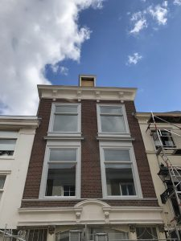
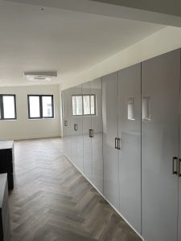
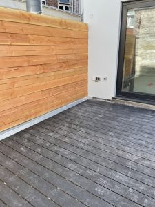
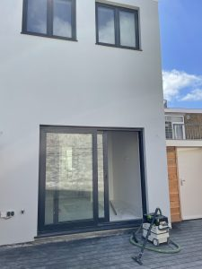
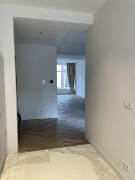
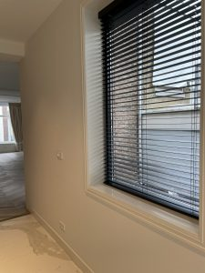
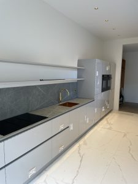
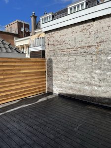

Hier vindt u een selectie van projecten die wij met zorg en vakmanschap hebben gerealiseerd. Van woningrenovaties tot dakopbouwen.








Een dakopbouw is een slimme manier om extra ruimte en waarde toe te voegen aan uw woning. Ten Berg Bouw verzorgt het volledige traject.
Wij begeleiden u in elke fase van het proces. Door onze ervaring met dakopbouwen in stedelijke omgevingen zorgen wij voor een soepel vergunningstraject en een hoogwaardige uitvoering.
Wij hebben ruime ervaring met dakopbouwen in Den Haag en omliggende gemeenten. Daarbij houden wij rekening met gemeentelijke eisen, bestaande constructies en minimale overlast voor bewoners.
Een woningrenovatie is de ideale manier om uw woning comfortabeler, moderner en toekomstbestendig te maken. Ten Berg Bouw verzorgt zowel gedeeltelijke als complete renovaties.
Wij renoveren woningen met respect voor bestaande bouw en oog voor detail. Door een heldere planning en duidelijke communicatie zorgen wij voor een soepel proces en minimale overlast.
Elk renovatieproject is maatwerk. Wij denken actief mee, geven deskundig advies en begeleiden het project van voorbereiding tot oplevering.
Goed onderhoud verlengt de levensduur van uw pand en zorgt voor behoud van kwaliteit en uitstraling. Ten Berg Bouw verzorgt onderhouds- en schilderwerkzaamheden voor woningen en VvE’s.
Door tijdig onderhoud voorkomt u grotere herstelkosten in de toekomst. Wij werken met duurzame materialen en zorgen voor een verzorgde afwerking.
Heeft u bouwplannen of andere plannen en wilt u vrijblijvend advies? Neem gerust contact met ons op.
Ten Berg Bouw
Van Lennepweg 65
2597 LH Den Haag
📞 070 221 07 51
✉️ info@tenbergbouw.nl